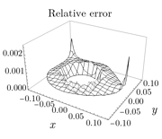

[Page 11] Suggest second figure showing that the normal vector is the normal (*in* the plane) to the diagonal of the rectangle in Figure 2.1 (rather than the normal *to* the plane).
Not adopted. A second figure is not necessary. The context already makes it clear that n is the normal in the plane rather than to the plane:
- The introductory Section 1.1 [Page 1] expounds boundary tracing as a theory for flux boundary conditions in two dimensions.
- The normal vector n, as it appears in equation (1.1) [Page 1],
is clearly a normal in the plane:
Consider a BVP, consisting of a PDE in some two-dimensional domain Ω together with the boundary condition
n · ∇T = F (x, y, T, ||∇T||) (1.1)on its boundary ∂Ω, […]. - The beginning of Section 2.1 [Page 11] refers explicitly to equation (1.1). Thus the n in equation (2.1) [Page 11] is the same n as that in (1.1).
[Page 37-ish, or Page 43] Suggest remark about Mathematica not being able to readily handle self-viewing (non-local) boundary conditions, so the approach of verifying that self-viewing radiation is small after boundary tracing is a powerful one. (Actual wording: it was a "checkmark" for boundary tracing.)
Not adopted. This suggestion arose from a discussion about how good the numerical method (using Mathematica) was, and whether I could have done an extra example for a self-viewing case. Now, Part I of the thesis applies boundary tracing to analytic solutions, producing exact results (in that we reduce the problem to integrating some ODEs, which can be done to any desired precision). The numerical work is simply there to verify those results; we are not pitting boundary tracing and numerics against each other. Since the numerical work plays only a supporting role, it should not be elevated by a comparison of what it can or cannot do compared to the {boundary tracing + verify error} approach.
[Page 58] Suggest taking absolute value of 'Relative error' in Figure 4.12 so that everything is positive.
Adopted. See <https://github.com/yawnoc/phd-thesis/commit/78e09a1> for the changes to Figure 4.12.
| Before | After |
|---|---|
 |
 |
For consistency, I have also done the same for 'Relative error' in Figure 5.10 [Page 75]; see <https://github.com/yawnoc/phd-thesis/commit/4d19232>.
| Before | After |
|---|---|
 |
[Page 110] Suggest articulating that boundary tracing results are not for perfectly circular roundings.
Not adopted. This is already in the text [Page 109], literally the sentence after the reference to Figure 6.31 (which could not fit on the same page):
Figure 6.31 displays such a comparison for (α, γ•) = (60°, 75°). The two approaches do not give exactly the same height rises because the rounding curves produced by boundary tracing are not perfectly circular.
[Page 110] Suggest a remark about the range of radii covered by 'Boundary tracing' versus 'Conventional'.
[Page 110] Suggest also some remark on computation time of BVPs versus ODEs.
[Page 122] Suggest remark about why the curves in Figure 7.17 are not smooth.
[Page 135] Suggest improvement of wording to clarify that H = 0 is necessary but not sufficient to eliminate the 1/r singularity at r = 0.